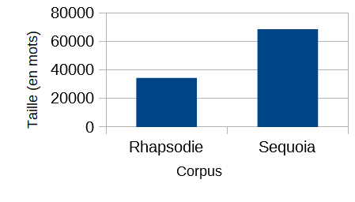

\( ^o^)/ Tableau récapitulatif
Le présent tableau recense toutes les requêtes et éléments affichés à parti des XML générés.
| Tableau des catégories grammaticales (POS, Part of Speech) | |||
| Lien vers | tableau HTML | requête Xquery | |
 | |||
| Taille et richesse du vocabulaire | |||
| Lien vers | tableau HTML | requête Xquery | |
|  | |||
| Distribution des mots | |||
| Lien vers | tableau HTML | requête Xquery | |
| Mots grammaticaux | |||
| Lien vers | tableau HTML | requête Xquery | |
| Tableau des arbres | |||
| Lien vers | tableau HTML | requête Xquery | |